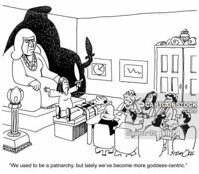

“If civilization had been left in female hands we would still be living in grass huts.” – Camille Paglia
The Book of Genesis has a warning to men and to civilizations. People typically only focus on certain phrases in the Genesis account and thus, miss the warning. God’s pronouncement of judgement upon Adam and Eve actually tells us some of the problems that will beset men and women and thus, civilization. The Genesis story contains a warning for men and women, individually and nationally. The Book of Genesis established an order, God’s order.
Most people are at least vaguely familiar with the account in the Garden of Eden. However, the details about the expulsion provide more information about one of the continuing events between men and women that would occur after Adam and Eve’s expulsion from the garden.
Genesis chapter one gives the entire creation account. Mankind is created in chapter one and told to multiply and replenish the earth. The following chapters in Genesis provide additional critical information about mankind and the outcome of certain events. Adam was created first and no suitable mate existed for Adam to fulfill the commandment of multiplying his own kind. God created Eve, not out of the Earth as in the case of Adam, but out of Adam himself. Eve was a reflection of Adam.
The Serpent’s Lie of Equality
After Adam and Eve partook of the Tree of the Knowledge of Good and Evil at the prompting of the beguiling serpent, God came to the Garden of Eden and decreed judgement. The King James Translation is a good translation but many English speakers have a limited knowledge of the definitions of the English language and are typically too lazy to consider additional meanings. The word “desire” in the KJV text is a word that has additional meanings. The following translation from the NLT provides additional clarification.
“Then he said to the woman, “I will sharpen the pain of your pregnancy, and in pain you will give birth. And you will desire to control your husband, but he will rule over you.” Genesis 3:16, NLT
And to the man he said, “Since you listened to your wife and ate from the tree whose fruit I commanded you not to eat, the ground is cursed because of you. All your life you will struggle to scratch a living from it. It will grow thorns and thistles for you, though you will eat of its grains. By the sweat of your brow will you have food to eat until you return to the ground from which you were made. For you were made from dust, and to dust you will return.” Genesis 3:17-19, NLT
The phrase “and you will desire to control your husband” is translated as “and thy desire shall be to thy husband” in the KJV. While the word desire certainly means that a woman will long for her husband, the word “desire” also means to desire something to control it and to have power over it. The second meaning is clarified by the clause, “and he shall rule over thee”. This clause tells us something about the nature of women that people, neglect, forget, overlook, or disbelieve. The desire of women to control men.
The Bible does not provide the conversation that took place between Adam and Eve concerning the fruit from the Tree of the Knowledge of Good and Evil. We know a conversation took place with the intention of convincing Adam to partake of the fruit. God’s statement to Adam makes clear there was a conversation. “Since you listened to your wife and ate from the tree whose fruit I commanded you not to eat.” Adam knew the commandment but still partook of the fruit.
Part of the lie the serpent told Eve is that she would be equal to God. Another part of the lie is that she would be happier having more power. The idea that men and women are equal is the same lies told differently. Men and women have different God-given roles. Adam was placed into the Garden to cultivate it and keep it. Eve was created after Adam was placed into the Garden. The populists would have us believe that Adam had no dominion over Eve and that they were “equals”. Eve was provided to Adam so the commandment to multiply and replenish the earth could be fulfilled and to assist him.
Adam named the animals and he named Eve. Naming is an act of dominion. Adam was given dominion over the earth, the animals, and Eve. Part of Adam’s error was he allowed Eve to convince him to break the natural order. Adam allowed Eve dominion over him when he allowed Eve to convince him of the lie of the serpent. Their expulsion from the Garden of Eden meant they had to work harder.
Adam and Eve as a Microcosm of Civilization
The account of Adam and Eve is also a fundamental description of the man and woman’s interaction within the family and the interaction of men and women within civilization. In general terms, we should place ourselves in the position of Adam, the women in our lives in the position of Eve.
The family, man, and woman, is a microcosm of civilization. Consider the following:
- Garden of Eden = Civilization
- Adam = the majority of the men of that civilization
- Eve = the majority of the women of that civilization
- The Serpent = Advocates of progressivism, gender studies, that men and women are equal, etc.
Taking into consideration that Adam represents the majority of men in a civilization and Eve the majority of women in a civilization, the civilization fell after the men heeded the promptings of the women and subverted the natural order. The women, flattered by the enticing serpent, taught their sons and daughters that men and women were equals, encouraged the acceptance of homosexuality on par with heterosexuality, encouraged abortion, destruction of the family, and that transsexuality and cross-dressing are acceptable, and in some instances desirable.
Since women obtained the right to vote, the family, and by extension our civilization, has moved more in the direction of disorder and lawlessness, essentially toward destruction. Giving women the right to vote has been a disaster. Giving women the right to vote pushed matriarchy to the forefront and diminished patriarchy. Most women inevitably vote their proclivities and emotions. A woman should voice her concerns to her husband or other adult male family members.
Left to themselves women are not inclined to build. This dynamic can be seen in the television program of Dutch version of Survivor (titled Expeditie Robinson). ROK has an article from 2014 discussing what occurred with men and women in survival situations. Suffice to say, men started working together to survive and the women squabbled. Towards the end of the program, three men went to the woman’s location and three women went to the men’s location. The men that went to the woman’s location became the women’s workhorses while they continued to be lazy and worked very little. The women that went to the men’s location worked little as well.
Men work with a substantial portion of the fruits of that labor going to their women and children. Ever since women have received the right to vote, they have used that voting power to persuade businesses and politicians that they should still receive the fruits of all men’s labors. Since the rise of feminism and the subsequent confiscation of the fruits of men’s labors, men are now producing less.

The Upside-Down Order
Voting comes with responsibility, which many women have not been able to handle since feminism has prevented and encouraged a childish and responsibility avoidance mentality. There was a reason earlier civilizations did not give women the right to vote. Voting, and thus government were seen as the realm of men because men are the primary builders of civilization and because of the responsibility that comes with voting rights. Women were to receive support from their husbands, fathers, or other male family members.
Feminists would have everyone believe that women have always been oppressed and are still being oppressed while this is not the case, wherever women obtained political power civilization fell. Feminism does not discuss or teach the sharing of power but how women need more power and do not have enough power. This desire for political power is the desire to control men. This is why everything is “sexist” in feminist eyes. There are plenty of articles on the Internet about how feminism is not about equality but about power.
A blogger wrote an article about the rise of feminism in Ancient Rome and Rome’s subsequent demise. The blogger also mentions Ancient Babylon and some of the Babylonian laws. The Bible, in the Book of Isaiah, states:
“Childish leaders [adult children] oppress my people, and women rule over them. O my people, your leaders mislead you; they send you down the wrong road.” Isaiah 3:12, NLT.
Roosh recently proved an excerpt on ROK from his book, Game. The excerpt is titled, Never Follow A Girl’s Lead. Adam let Eve lead and look what happened. A woman that tells you to be less of a man and less masculine desires power over you. She is trying to control you. Men want to be respected, women want to be loved, but neither is possible with the lies of equality in the picture. Women will be happier when they stop seeking control over men.
We all know when women obtained the vote feminists began moving in the direction of replacing men with another authority, government. Feminists also began pushing for more women in government and other positions of authority. Men, being ostracized and deceived, began letting more and more women lead. This makes men weak.
The more a woman seeks to control the men around her, the more unhappy she becomes. Feminism deceives a woman into believing that having power will make her happy and if she is not happy it is because she does not have enough power. These are lies. This is why the more power a woman attains the more unhappy she becomes, even if she will not admit her own unhappiness. Hillary Clinton is one example of a woman that desires control. An honest person can see that Hillary is clearly unhappy and she believes the solution to her unhappiness is more power, which is not the case.
There are women that realize there are important differences between men and women, and these women are responsible caring wives and mothers. These mature women realize that feminism harms everyone and creates unhappiness and lawlessness.
We are witnessing the demise of our civilization at the hands of weak men and women that desire to control men. Women will be happier when they stop trying to control the men and return to God’s established order. God did not make Eve equal to Adam. Eve was not Adam’s slave; she was a helper to him. She was to assist him in his assigned tasks.
Woman, instead of seeking to snatch control from the man, must do what she was created to do and assist the man. Men must lead, which requires responsibility and masculine strength. A man truly shows he cares for the women and children in his life by leading instead of abdicating his role designated to him by God.
Read More: Who Was The First Man To Be Red Pilled?